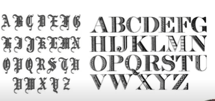
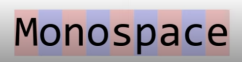

seta a imagem como se fosse no Body e independente se o texto da div for movido, a imagem permanece imovel, so move quando o body move
background-attachment: fixed;
seta a imagem e permanece fixa
background-attachment: scroll;
a imagem é scrollada junto com o texto.
background-attachment: local;
Com ela nos conseguimos definir qual vai ser o ponto de origem de uma imagem de fundo ou seja qual parete ela vai ocupar
Com o codigo abaixo a imagem de fundo ira ocupar o espaço do conteudo e do Paddindg.
background-origin: padding-box;
Com o codigo abaixo a imagem de fundo ira ocupar o espaço do conteudo, do padding e da borda
background-origin: border-box;
Com o codigo abaixo a imagem de fundo ira ocupar o espaço do conteudo
background-origin: content-box;
essa função de funciona de forma similar ao background origin, a diferença é que o background clip serve para a cor de fundo e não apenas para imagem
Com o codigo abaixo a cor de fundo ira ocupar o espaço do conteudo e do Paddindg.
background-clip:padding-box ;
Com o codigo abaixo a cor de fundo ira ocupar o espaço do conteudo, do padding e da borda
background-clip: border-box;
Com o codigo abaixo a cor de fundo ira ocupar o espaço do conteudo
background-clip: content-box;
Com o codigo abaixo a cor de fundo ira passar a ser apenas das letras isso serve tanto para conteudo do fundo quanto imagens
background-clip: text;
color: transparent;
Define como a imagem e a cor de fundo conseguem se misturar entre si de uma certa forma é como se aplicasse uym filtro na imagem baseado na cor de fundo
background-blend-mode: multiply;
background-blend-mode: screen;
background-blend-mode: overlay;
background-blend-mode: color;
background-blend-mode: color-burn;
background-blend-mode: color-dodge;
background-blend-mode: darken;
ackground-blend-mode: difference ;
background-blend-mode: exclusion;
background-blend-mode: hard-light;
background-blend-mode: hue;
background-blend-mode: lighten;
background-blend-mode: luminosity;
background-blend-mode: normal;
background-blend-mode: saturation;
background-blend-mode: soft-light;
o backgroud é meio que uma chave geral, atraves dela temos as suas variações(origin, size, blend e etc..)
background:
url(../imagens/leaves-5949884_1280.png)----------/*Imagem
top center /100% 100% -------------------------------/* Defino a posição depois o tamanho
no-repeat ------------------------------------------------/* Repeat
scroll ---------------------------------------------------- /* Atachament
padding-box -------------------------------------------- /*Origin
content-box ----------------------------------------------/*Clip
rgb(122, 216, 122) --------------------------------------/*Background color
;
Podemos definir as configuração das nossas bordas atraves das Propriedades:
border-style: dashed;
border-style:dotted ;
border-style: double;
border-style: groove;
border-style: hidden;
border-style: inherit;
OBS: note que esta herda o atributo borda-style
border-style:inset ;
border-style: outset;
border-style: ridge;
border-style: solid;
assim como os backgrounds podem ser definidos cores para as bordas atraves do atributo borde-color,
ele pode ser setado de diversas formas como ja vimos antes nas cores, por nomes pre-definidos, hexadecimal, HSL, HSLA, RGB e RGBA
Não muito diferente das cores os tamanhos podem ser definidos com as medidas ja pre-difinidas, como medium, Think ou thin, ou também usar as medidas convencionais como px, cm e etc...
Em vez de setar as 3 propiedades de formas distintas, podemos setar os 3 de uma so vez atravez da Propriedade Border.
border: 10px solid aqua;
Com a Propriedade border-radius conseguimos arredondar as bordas dos nossos elementos. seja ele tendo bordas visiveis ou não.
border-radius: 13px;
border-radius: 13px 25px 35px;
border-radius: 20px / 45px;
Essa Propiedade serve para por imagens nas bordas
border-image-source: url(../imagens/leaves-5949884_1280.png);
border-image-source: linear-gradient(aqua,blue);
border-image-source:none ;
A propriedade tem como função fatiar a imagem desejada em 9 pedaços, onde a imagem abaixo ilustra bem essa divisão:
border-image-slice: 160;
border-image-slice: 160 fill;
border-image-source:linear-gradient(aqua, blue) ;
border-image-slice: 10;
Note que quando usamos o gradiente, o slice desloca apenas a intersecção do gradiente
Com o border image widht, nos conseguimos mudar a largura da imagem dentro dessa borda.
border-image-width: 60px;
border-image-width: 60px 120px;
border-image-width: 60px 120px 45%;
como cimos acima o modelo de seter uma imagem na borda é bem util, porem as imagens ficaram desproporcionais, com o border repeat nos conseguimos fazer com que as laterais seja repetidas e não mais esticadas.
border-image-repeat: repeat;
border-image-repeat: stretch;
border-image-repeat:round ;
border-image-repeat: space;
Com o Outset nod definimos o espaçamento do nosso conteudo em relação a borda, similar ao padding
border-image-outset: 30px ;
border-image-outset: 17px 35px;
Assim como algumas propriedades conseguimos resumir toda a nossa trilha em uma so propriedade.
border-image:
url(../imagens/STARS.png) /*Define a imagem ou gradiente*/
170 / 46px / 1px /*define o Slice | Width | outset*/
round /*define o repeat*/
na tiupografia exitem os chamados tipos genericos, também conhecidos como grupos de fontes, que são:
as fontes serifadas são caracterizadas pelos traços nos fins das letras.
exemplo:
Times New Roman
Georgia
as fontes Sans serif são as fontes que não possuem prolongamento no fim da letra.
exemplo:
Arial
As fontes displays são consideradas as enfeitadas ou comemorativas. algumas vezes podem ser ate simbolos em vez de letras
exemplo:

Também chamadas de manuscritas, as handwriting são denominadas dessa forma pois parecem ter sido escritas a mão.
exemplo:
São caracterizadas dessa forma porque todos os caracteres ocupam o mesmo tamanho de espaçamento.
exemplo:

Um dos lugares mais faceis e muito usados atualmente é o google fontes. atraves do link:
Fonts google